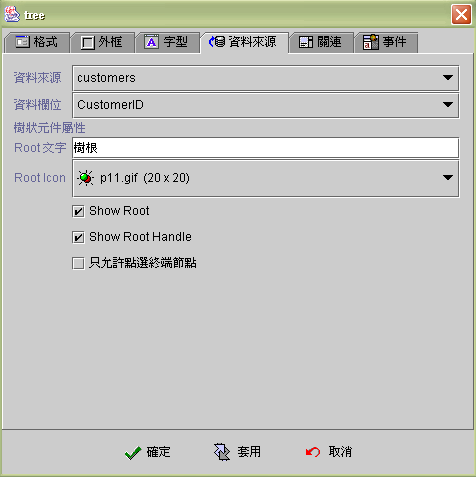
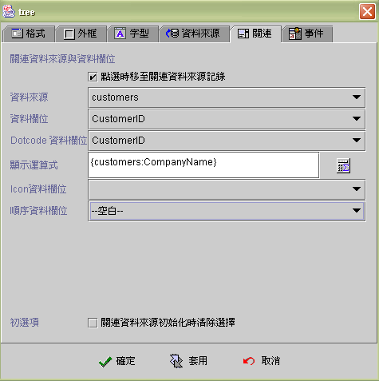
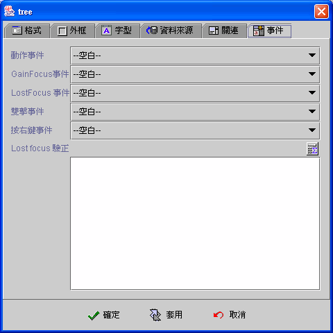

|

樹狀元件 (Tree component)

共同屬性 (common properties)
Dot
code 節點結構 (dot code structure)
資料來源
(data source)
關連資料來源
(lookup data source)
事件
(event)
運算式屬性存取
(formula get/set properties)
樹狀元件
(Tree component) 是以關連資料來源 (lookup data source) 組成樹狀的節點(node)，當樹狀元件連結(binding) 資料來源欄位
(data field) 時
，樹狀元件會以資料來源的資料欄位值 (data field)，搜尋關連資料來源(lookup
data source) 的資料欄位值(data field)
，當其值相等時就標示該節點為選取節點 (selected node)。
樹狀元件列示的節點
(node)
說明文字
是以運算公式 (formula) 的結果值顯示。而樹狀元件的節點結構則由
dotcode 欄位控制，同一層級
(level)
的節點 (node) 次序則根據 Sequence 欄位屬性排序。
樹狀元件可以只選用關連資料來源
(lookup data source)，而不連結 (binding) 資料來源 (data source)，如果設定
被選時移至關連資料來源記錄
的屬性，可以將樹狀元件當成是關連資料來源 (lookup data
source) 的檔案記錄 (record)
移動選擇器，使用者按選節點 (node)，關連資料來源 (lookup data
source) 即將目前檔案記錄 (current record) 移至 (move to)
該項目的檔案記錄，並引發關連資料來源的讀取前後事件
(before and after fetch event)，連結 (binding)
此關連資料來源的其他元件都會自動更新內含值。
樹狀元件是並不是虛擬模式
(virtual mode) 的元件，所以關連資料來源 (lookup data source)
的擷取記錄數 (row fetch) 應設為 -1 (全部擷取) 以加快初始的檔案記錄
(record)
讀取效率。
Dot
code 節點結構 (dot code structure)
樹狀元件
(Tree component) 除了根節點 (root node) 外，每一個節點 (node)
代表關連資料來源 (lookup data source) 的一個資料記錄 (record)，所以在關連資料來源
(lookup data source) 中，需要有描述資料記錄 (record)
在樹狀節點位置的欄位 (field)，這個欄位在屬性設定中稱之為
Dot code field 欄位；在同一個階層 (level)
中的節點 (node)，則以屬性設定中的順序 (Sequence
filed) 欄位排序。
Dot
code 欄位 是以點 (dot)
為節點階層(node level) 的分隔符號，例如：asia.tw.taipei，taipei
是該資料記錄的 Code，而 asia.tw 則是上層父系節點的 Code。以下例中關連資料來源
(lookup data source) 的資料欄位為例：
| dotcode |
sequence |
icon |
description |
| asia |
1 |
|
亞洲 |
| asia.tw |
1 |
tw.gif |
台灣 |
| asia.tw.taipei |
1 |
taipei.gif |
台北 |
| asia.jp |
2 |
japan.gif |
日本 |
| asia.jp.tokyo |
1 |
|
東京 |
| asia.cn |
3 |
cn.gif |
中國 |
| asia.cn.shanghai |
1 |
|
上海 |
| america |
2 |
|
美洲 |
| america.usa |
|
usa.gif |
美國 |
| america.usa.newyork |
|
|
紐約 |
| america.canada.toronto |
|
|
多倫多 |
| europe |
3 |
|
歐洲 |
| europe.italy |
1 |
italy.gif |
義大利 |
| europe.italy.milan |
1 |
|
米蘭 |
| europe.france |
2 |
france.gif |
法國 |
| europe.france.paris |
1 |
|
巴黎 |
將樹狀元件的相關屬性設定如下：
-
Dot
code 欄位 (dot code field)：dotcode。
-
顯示運算式
(display formula)：{資料來源:description}。
-
Icon資料欄位：icon。
-
順序欄位
(sequence field)：sequence。
下圖是樹狀元件
(Tree component) 展開【亞洲】及【美洲】節點的狀態：

由上圖及記錄資料
(record data) 關於樹狀元件：
-
canada
節點並沒有相對的資料記錄 (record data)，所以形成 Code
裸露的狀態，執行時使用者將無法按選到此節點。
-
sequence
field 是選擇性 (optional) 的屬性，設定此欄位資料
(record field) 內含值，樹狀元件即據以排序，否則以附加
(append) 的方式決定順序。
-
圖示欄位 (icon
field) 是選擇性 (optional) 的屬性，設定此欄位資料 (record
field) 內含值，樹狀元件即顯示圖示 (icon)，否則以 Java™ 預設圖示顯示。
▲Top
資料來源 (data source)
-
資料來源
(data source)：選取資料來源。
-
資料欄位
(data field)：選取資料欄位。
-
Root：根
(root) 節點的說明文字。
-
Root Icon：根
(root) 節點的圖示。
-
Show Root：顯示根節點
(root)。

不顯示 Root 。

-
Show Root handle：顯示根節點
(root) 的 Handle。
不顯示 Root Handle。

-
只允許點選終端節點：使用者點選非終端節點時無效亦不引發任何事件。

▲Top
關連資料來源
(lookup data source)
-
被選時移至關連資料來源記錄：使用者選取樹狀元件
(Tree component) 的節點 (node) 時，關連資料來源將目前的資料記錄
(current record) 移至 (move to) 該節點的資料記錄 (record)
，並引發關連資料來源的讀取前後事件(before and after fetch
event)。而連結 (binding) 此關連資料來源的其他元件都會自動更新內含值。
-
關連資料來源
(lookup data source)：選取資料來源。
-
關連資料欄位
(lookup data field)：選取資料欄位。
-
Dot
code 欄位 (dot code field)：描述資料記錄 (record)
在樹狀節點位置的欄位。
-
顯示運算式
(display formula)：以運算式顯示節點資料 (node)。
-
Icon資料欄位：在每個節點
(node) 前顯示圖示，選擇性 (option) 屬性。選用時系統以欄位型別
(field type) 判斷是 LONGVARBINARY 的圖檔資料或是 VARCHAR
的圖檔名稱，若是圖檔名稱必須將圖檔儲存於應用程式模組的class
目錄中 Images 或 Preloadimage 目錄下。
-
順序欄位
(sequence field)：同一個階層 (level) 中的節點 (node)，以順序欄位排序。欄位為數值欄位以數值排序否則以文字排序。
-
初選項
(initial selection)：關連資料來源初始化時清除選取。如果樹狀元件沒有連結
(binding) 資料來源 (data source)，核選此屬性時，樹狀元件初始為沒有任何選取節點的狀態，否則第一個節點為初始選取項。如果樹狀元件連結
(binding) 資料來源 (data source)，此項屬性無作用，其初始選取節點
(selected node) 為資料來源欄位
(data source field) 與關連資料來源欄位 (lookup data source field)
相等的節點 (node)。

▲Top
事件 (event)
-
動作事件 (action event)：使用者按選
(clicked)
改變選取節點時，即引發事件 (fire event)。
-
Gain Focus 事件：當 Focus
移入樹狀元件時，即引發事件 。
-
Lost Focus 事件：當 Focus
移出樹狀元件時，即引發事件 。
-
雙擊事件 (double click event)：當雙擊滑鼠的左鍵時，即引發事件。
-
按右鍵事件 (right click event)：當按下滑鼠右鍵時，即引發事件。

▲Top
運算式屬性存取
(formula get/set properties)
SetProp("元件名稱",
"屬性", 值) ：屬性設定。
SetProp("元件名稱",
"屬性", 值1, 值2)：屬性設定。
GetProp("元件名稱",
"屬性")：屬性讀取。
| Set
Properties |
屬性
(Properties) |
值1
(Value 1) |
值2
(Value 2) |
說明
(Descriptions) |
| enabled |
1 致能，0 失效 |
|
致能與失效。 |
| setfocus |
1 設定 Focus |
|
設定 Focus。 |
| visible |
1 顯示，0 隱藏 |
|
顯示與隱藏。 |
| repaint |
1 重繪，2
立即重繪 |
|
重繪。 |
| revalidate |
1 重建樹狀元件 |
|
重建樹狀元件，重整資料來源連結至樹狀節點的資料。 |
| reload |
1 重整樹狀元件 |
|
重整樹狀元件，由目前選取節點，重整以下的所有子節點。 |
| leafonly |
1 只能選取末端節點，0 不限末端節點 |
|
限制使用者只能選取末端節點。 |
| selected |
RecordNo 選取資料記錄編號為 RecordNo的節點 |
1： 引發事件
0 ：不引發事件 |
選取資料記錄編號為 RecordNo 的節點。
RecordNo = 0 ，清除選取。
如果設定被選時移至關連資料來源記錄，連結的資料來源，會移至 RecordNo 資料記錄。
節點將會捲動至可視區域。 |
| expand |
RecordNo |
1：展開
0：隱藏 |
資料記錄編號為 RecordNo 的節點。原選取節點不會改變。展開或隱藏的節點將會捲動至可視區域。 |
| shownode |
RecordNo |
|
原選取節點不會改變。 節點將會捲動至可視區域。 |
| bg |
RGB(red, green, blue) |
|
背景顏色。值1 必須以Formula 的 RGB() 運算式給值。
|
| fg |
RGB(red, green, blue) |
|
前景顏色。值1 必須以Formula 的 RGB() 運算式給值。
|
| x |
正整數值 |
|
左座標位置。 |
| y |
正整數值 |
|
上座標位置。 |
| w |
正整數值 |
|
元件寬度。 |
| h |
正整數值 |
|
元件高度。 |
| xy |
正整數值 |
正整數值 |
左(Value1) 上(Value2) 座標位置。 |
| wh |
正整數值 |
正整數值 |
元件寬(Value1) 高(value2)度。 |
| Get
Properties |
| 屬性(Properties) |
傳回值
(Return value) |
說明 (Descriptions) |
| isenabled |
1 致能，0 失效 |
致能與失效。 |
| isvisible |
1 顯示，0 隱藏 |
顯示與隱藏。 |
| leafonly |
1 只能選取末端節點，0
不限末端節點 |
讀取是否限制使用者只能選取末端節點。 |
| selected |
RecordNo 被選取節點的資料記錄編號 |
讀取被選取節點的資料記錄編號。 |
| isexpand |
1 展開 ，0 隱藏 |
被選取節點展開或隱藏。 |
| first |
RecordNo
樹狀元件第一個節點的資料記錄編號 |
讀取樹狀元件第一個節點的資料記錄編號。 |
| isleaf |
1 末端節點，0 不是末端節點 |
被選取的節點是否為末端節點。 |
| childcount |
N 子節點數 |
被選取的節點擁有 N 個子節點。 |
| dotcode |
文字串，被選取節點的資料記錄的
DotCode 資料 |
讀取被選取節點的資料記錄的 DotCode 資料。 |
| code |
文字串，被選取節點的資料記錄的
Code 資料 |
讀取被選取節點的資料記錄的 Code 資料。 |
| level |
N 被選取節點位於樹狀結構的 N
階層 |
被選取節點位於樹狀結構的 N 階層。 |
| firstchild |
RecordNo
被選取節點的第一個子節點的記錄編號 |
被選取節點的第一個子節點的記錄編號。
RecordNo = 0 ，沒有子節點。 |
| dottext |
文字串，被選取節點的資料記錄的顯示資料 |
被選取節點的資料記錄的顯示 (Display)
資料。 |
| siblingcount |
N 旁系節點數 |
被選取的節點擁有 N
個同一階層的旁系節點。 |
| parent |
RecordNo 父節點的資料記錄編號 |
被選取節點的父節點的資料記錄編號。 |
| parentdotcode |
文字串，被選取節點的父節點的資料記錄的
DotCode 資料 |
被選取節點的父節點的資料記錄的 DotCode
資料。 |
| parentcode |
文字串，被選取節點的父節點的資料記錄的
Code 資料 |
被選取節點的父節點的資料記錄的 Code
資料。 |
| prevsibling |
RecordNo
被選取節點的前一個旁系節點的記錄編號 |
被選取節點的前一個旁系節點的記錄編號。 |
| nextsibling |
RecordNo
被選取節點的下一個旁系節點的記錄編號 |
被選取節點的下一個旁系節點的記錄編號。 |
| x |
整數值 |
左座標位置。 |
| y |
整數值 |
上座標位置。 |
| w |
整數值 |
元件寬度。 |
| h |
整數值 |
元件高度。 |
▲Top
Copyright © 2001~
2004 Probe Technology . All Rights Reserved.
Questions, comments,
and suggestions to Service@probe.com.tw
|